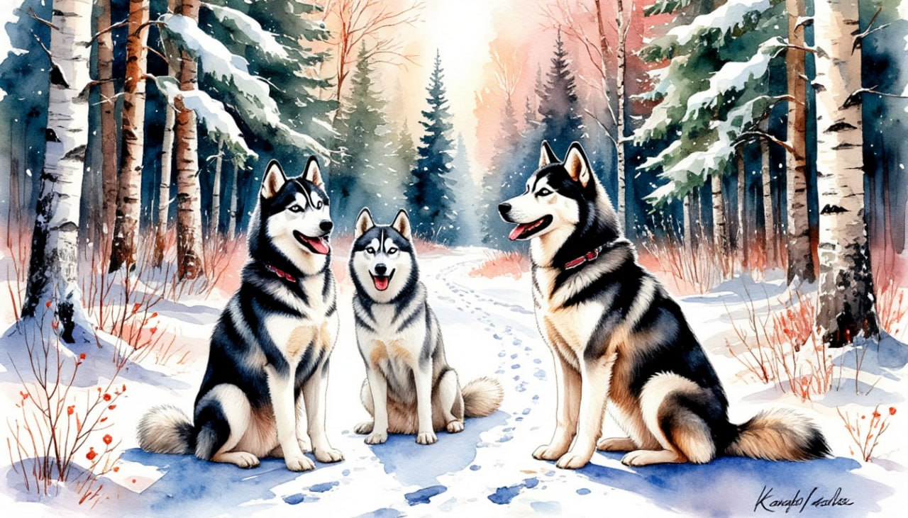

Новый год у Талвиукко

Даты тура: с 30 декабря 2025 года (вт) по 3 января 2026 года (сб)
- Кострома → Петрозаводск → Водопад Кивач → Карельское поместье Талвиукко* → Питомник хаски → Сортавала → Рускеала → Кострома
Стоимость тура:
- 33 900 р. - взрослый
- 33 600 р. - пенсионеры/школьники
- 40 900 р./чел - одноместное размещение
По программе:
- Непоседливые хаски, столица республики – Петрозаводск, водопад Кивач, живописный мраморный каньон Рускеала и бывший финский городок Сортавала. Изюминка тура – посещение поместья карельского Деда Мороза – Талвиукко!
Программа тура:
1 день:
- 14-30- выезд из Костромы от ТРЦ "РИО". Ночной переезд.
2 день:
- Кивач + Петрозаводск
- Прибытие в Петрозаводск.
- Завтрак в кафе города.
- Обзорная экскурсия по г. Петрозаводску: посещение кафедрального собора Александра Невского, осмотр памятника Петру I – основателю города. Прогулка-экскурсия по набережной.
- Петрозаводск, ровесник и почти тезка Петербурга, был основан в устье реки Лососинки, на берегу Онежского озера, по велению Петра I, и тоже назван в честь царя-реформатора. Это индустриальный, культурный и научный центр с богатой историей. Здесь располагаются высшие учебные заведения, филиалы Академии наук, театры и музеи, промышленные предприятия.
- Отъезд на водопад Кивач (Петрозаводск → Кивач: 100 км).
- Посещение водопада Кивач. В 100 км от Петрозаводска на реке Суне «алмазна сыплется гора» – крупнейший в России равнинный водопад. Вода падает четырьмя уступами с высоты 10,7 м. Название водопада даёт имя и заповеднику, расположившемуся вокруг него - Кивач. Снежные таежные пейзажи, природная мощь в застывших каскадах очаровывают своей красотой.
- Возвращение в Петрозаводск.
- Обед.
- Размещение в гостинице. Свободное время.
За дополнительную плату (по желанию):
- Вечером - участие в Новогоднем банкете*. Программа и меню банкета будут опубликованы позднее.
3 день:
- Карельское поместье Деда Талвиукко*
- Завтрак.
- Свободный день в Петрозаводске, который Вы можете посвятить прогулке по центру Петрозаводска и знаменитой Онежской набережной, посещению музея изобразительных искусств Республики Карелия со знаменитой коллекцией карельских древностей и русской классики или же музею "Полярной ладьи". А еще в Петрозаводске много приятных кафе.
- ИЛИ
- Вы можете отправиться в уникальное путешествие в карельское поместье Талвиукко (за доп. плату)*!
- Главного карельского Дедушку Мороза зовут Талвиукко, что значит "Зимний Дед". Добрый волшебник Талвиукко живёт в карельских лесах вместе со своей помощницей тётушкой Лаппи. Здесь есть питомник ездовых собак и оленья ферма (их можно будет посетить в свободное время за доп. плату)*. Да много всего интересного!
- Вас ждёт встреча с с карельским Дедом Морозом и его сказочными друзьями, душевные посиделки у настоящей русской печки. Вы сможете своими руками изготовить оригинальный сувенир и сфотографироваться с самим волшебником Талвиукко. Приглашаем в сказку!
- Возвращение в гостиницу
4 день:
- Хаски + Сортавала + Рускеала
- Завтрак (ланч-бокс).
- Отправление в питомник хаски, где Вас ждёт встреча с этой древнейшей ездовой породой собак, знакомство с каюрами и устройством питомника. Заряд положительными эмоциями гарантирован! Катание на хаски (за доп. плату)*.
- Отправление в Сортавалу - один из древнейших и красивейших городов Республики Карелия. Сортавала отличается от других городов Карелии своеобразием историко-культурного облика, сформированного тремя государствами: Швецией, Финляндией и Россией. У города три имени, три даты рождения, а в своё время даже существовало три треугольные площади (на данный момент осталось две).
- Обед.
- Отправление в Рускеалу (Сортавала → Рускеала: 30 км).
- По пути - фотостоп у живописного водопада Ахвенкоски - места съёмок фильмов "А зори здесь тихие..." и "Тёмный мир".
- Экскурсия по горному парку Рускеала - самым знаменитым каменоломням Северо-Запада России, среди которых выделяется затопленный водой старый мраморный каньон и древние штольни.
- Отвесные мраморные скалы уходят вертикально вниз и обрываются в изумрудно-зелёную воду, а вокруг карьера проложена ухоженная и благоустроенная тропа, с которой открываются замечательные виды.
- Отправление домой. Ночной переезд.
- * Катание на хаски для взрослых и детей производится на дистанцию около 2 км.
- * Обращаем Ваше внимание, что бронирование и оплату дополнительной услуги необходимо производить заранее, т.е. до начала тура. При бронировании экскурсии на месте Туроператор не гарантирует её подтверждения, а при наличии мест стоимость будет увеличена на 200 руб.
- * Обращаем внимание: данная дополнительная экскурсия состоится только при наборе минимально необходимой группы.
5 день:
Прибытие в Кострому (ориентировочно после обеда)
В стоимость тура входит:
- - проживание в гостинице*
- * Гостиница "Тайвас" (реестровый адрес: С102025007644)
- Питание по программе;
- - услуги гида-экскурсовода
- - экскурсионная программа
- - автобусное обслуживание по программе тура
Дополнительно оплачиваются (по желанию):
- Катание на хаски (взрослые) 4 200 руб (бронирование возможно только заранее)
- Катание на хаски (дети от 5 до 12 лет включительно) 2 200 руб (бронирование возможно только заранее)
- Новогодний банкет (взрослые) Стоимость уточняется
- Новогодний банкет (дети от 3 до 12 лет) Стоимость уточняется
- Поездка в поместье Талвиукко 2 900 руб (при покупке заранее), 3 100 руб. (при покупке на месте)
Стоимость тура не зафиксированы и могут быть изменены в большую или меньшую сторону в зависимости от уровня спроса в любой момент.
Время начала экскурсий и их порядок указано ориентировочно.
Фирма-исполнитель оставляет за собой право замены экскурсий без уменьшения общего объема экскурсионной программы.
По вопросам бронирования обращайтесь: